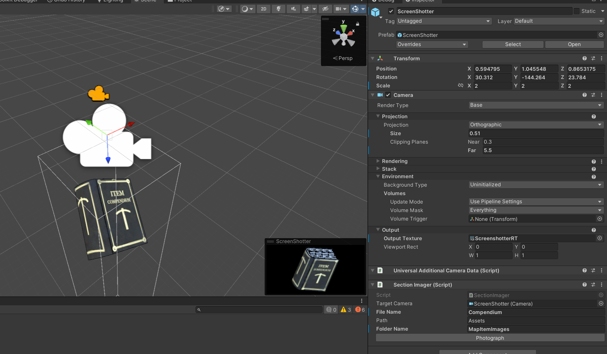
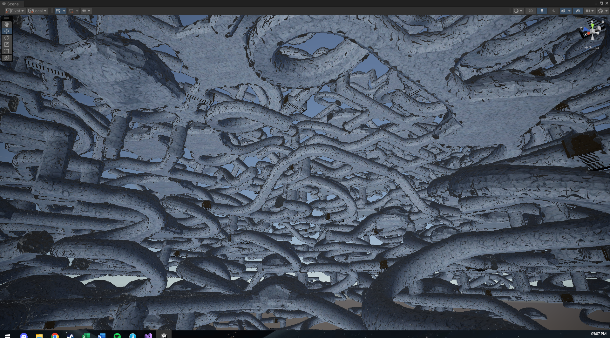
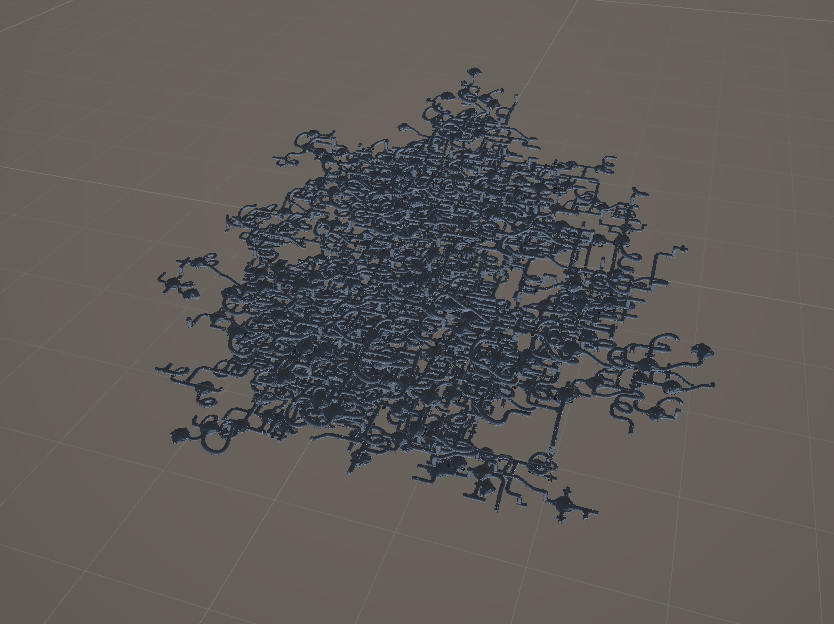
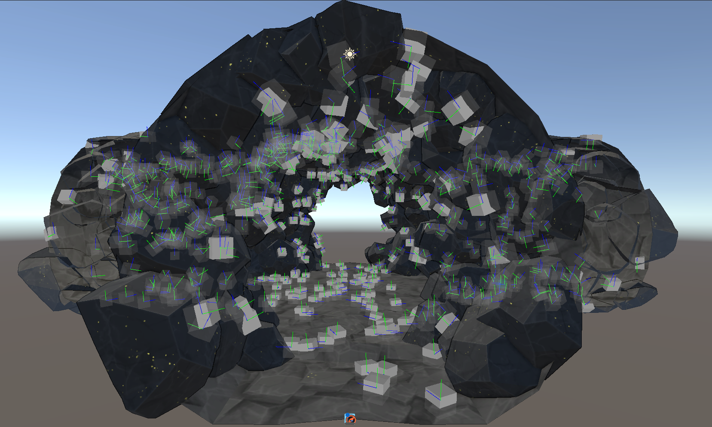
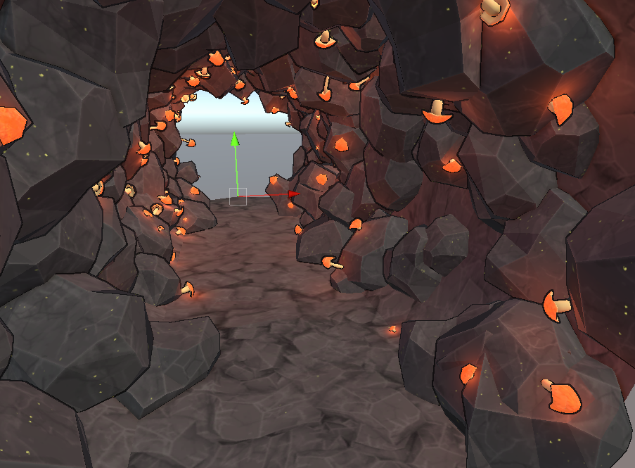

Download and play it on itch.io here! See the project repo here!
Lumen Seeker was the second year group project I worked on at Falmouth, the project breief was for "a game in a world" - world building basically. Unlike first year, the team compositions where much more balanced as the full year's worth of artists take part.
Teams where randomly selected over the summer by the game academy and unfortunately my team ended up being the smallest in the year due to people dropping out between team formation and the start of the project. Our compisition in the end was two artists, a writer, an animator and two programmers. Unusually we had an animator and writer, most teams did not. But most teams had 10 people we had 6.
The other programmer I would describe as out of their depth and unwilling to learn despite the teams efforts. The project ran the whole university year, and in Feburary we where gifted a game designer bringing us up to 7 people. But by this point the game was so far along and had not really been designed at all that they couldn't really salvage it.
The whole team by the end kinda suffered with "we just want to pass the module" minimal effort into the project, it worked out in the end tho.
"Lumen Seeker is a first-person exploration game taking place in an ever-changing mine, built through procedural generation and decoration systems, where no playthrough is exactly the same. As a new miner now trapped in the mines with no known way out, it’s up to you to figure out what’s gone wrong and how to fix it. Explore your surroundings, collaborate and trade with the Lumenites- crystalline entities born from the mines, to discover the secrets of what lies beneath the surface."
- Lumen Seeker Itch page
I have very mixed feelings about this game. I don't really think its a good game, I don't like it but at the Falmouth Games expo everyone that played it played all of it (20-40 minutes) which was crazy to me, usually games for the expo are supposed to be 10 minutes. A testiment to the writing of Ajax and hte emersiveness of the environment.
On returning to this game now to write up this piece for hte portfolio I thing its technically impressive what we achieved in the constraits we had. I'm particularly proud of the cave generator and procedural decoration tools which are broken down below.
Intial Cave Generator
Prototype
As part of ideataion for the games that year, we had to make prototypes in an engine other than the engine we where to use for developing the game (We had the choice of Unity or Unreal). I opted to prototype a map generator in Stride3D a C# ECS engine.
The map generator consists of prefabbed map sections with a common connections at the end, the game then spawns new sections as the play moves from section to section. One of the ideas drawn during ideation was "spatial paradox" so I thought it would be interesting if the map was ever changing.
The video above shows that as the player moves the sections where the player has been being de-spawned then replaced with different a different section - like a maze thats fighting back.
Moving to Unity
A problem not addressed in the prototype was occupency testing. The stride prototype would whack sections into the same space the map already had a section in. To solve this, cave sections where given simple box colliders to approximate their shape then the physics engine was used to do a overlap check each time the map generator wanted to spawn a new map section.
The map generator would first pick randomly pick the connector to spawn the next section at then it would randomly pick the next cave section prefab and overlap test in every orientation that prefab could be in. It kept doing this until it found a combination that fits or until it ran out of sections to pick from. I developed editor tools to debug this process examples of which can be seen below.
The map genreator always keeps a certain number of cave sections spawn away from the player as shown in the videos above.
Increasing the number of sections away from the player the map generated and with a high number of shapes avaliable the cave system felt very natural without much repitation.
Still sometimes a situation would arrise where no section would fit, in this case a dead end section would be used which simply blocked up the cave.
Minimap
Because of the cave genreator being completely random in either direction, people found it hard to navigate as there was no reference for what was going on. This was addressed by the addition of a minimap which showed the current map.

The minimap shows elevation through lighter blue and dark blue areas and it also shows what sections have been explored in yellow. I made it using Unity UI toolkit, and by photographing each section prefab using an orphorgraphic camera, saving the image as a png. I used the same tool to create icons for items in the UI as seen above.
The minimap also shows waypoints. These point at sections that are "persistent", persistent locations do de-spawn when the player walks far enough away but will respawn as they where if the player moves closer to them again. The lumenite colony and other key story locations behave like this, but the player could also trade for an item that let them create their own waypoints, the use of which was prety questionable.
Improved Generator
At some point, I decided the existing map generator wasn't fast enough. Whenever the player crossed threshold the whole game would hitch for a second as it tested and spawned new sections.
I decided to stop using the unity physics engine for overlap testing as it requires you spawn a gameobject with a collider to overlap test against, and created my own overlap physics engine.
This overlap testing engine used Oritented Bounding Boxes (OBB) to produce more accurate results, I wrote it using Unity's C# Job system which lets you write heavily multi-threaded optimised C# code that is compiled to C++ at build time.
The results of this meant the average per section testing time went from 5ms to 0.045ms, a huge uplift.


While this was good and allows for the calculation and spawning of all the sections in one frame, now the bottle neck was spent on time instantiating the prefabs, doing this all in one frame creates a noticable hitch, previously hidden as prior to this sections where spawned and tested once per frame not simultantously.
To fix this I created a queue of sections to spawn and a coroutine would spawn sections every frame until it ran out of a maximum time it could spend spawning per frame before waiting for hte next frame. All to say, it spread out section spawning over multiple frames to maintain frame rate - even though the whole map generation was calculated in one frame.
The result allowed for absolutely stupidly large maps, which look like the old windows xp pipes screen saver.
Procedural Decoration
By themselves the, the cave prefabs are a bit boring. Decorating them with crystals, minerals and mushrooms really helped with immersion and helped make the same tile-set feel differnet.
I did this by creating a procedural decoration system and some editor tools. The decoration system would randomly spawn decorations all over the insides of the caves at random locations. With enough items, enough possible locations and different random options for spawning, this could create very different feeling caves parts while still feeling cohesive.
The editor tools I made for this feature where about automation, manually adding enough points to every cave section prefab was not tollerable from a time or santity standpoint.
I wrote a tool that would cast rays from every vertex in the cave mesh in all sorts of directions based on the vertex and face normals (video above) The result was many cubes with the Y and Z direction lines for showing orientation.
I then wrote more tools to traverse through each point it created for manual cleanup and orientation tweaking, a time laps video of which can be seen below.


The results of which then created nice decorated caves. I remember there is a 5% chance a cave section will be entirely glowly orange mushrooms, just because I liked how it looks.
Gallery
Collection of screenshots demos of other call features I didn't write about, including animation implementation, outline shader effects, UI and the breakable walls.